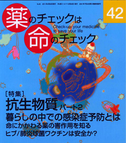

No.42 [特集] 抗生物質パート2 使い方と害作用 2011年4月 発行
インフルエンザやかぜといったウイルスが原因の病気に「念のため」と抗生物質を処方する医者がいて、 それに疑義をはさまずに調剤する薬剤師がいて、疑うことなく服用する患者がいます。これは非常におかしな医療なのですが・・・。 遂に便座まで抗菌という何でも抗菌の風潮も相変わらずです。
予防しなくてはいけない感染症とは？
抗生物質を使わなくてはならない症状は？
くすりの効果と害のバランスは？
耐性菌をつくらない最良の方法は、自分の体に棲んでいる菌との共存です。
感染を怖がらないために役立つ話しをじっくり具体的にしましょう。
もくじ
Main Feature 特集 抗生物質 パート2 使い方と害作用
■ いまさらだけど聞きたい知りたい
暮らしの中での感染症の予防について 編集部
―谷田憲俊さんに聞く
■ 質問箱番外編① アジスロマイシンを例としてあげるのは不適当では？
■ 開業小児科での使い方 入江紀夫
■ 皮膚科開業医でみられる細菌感染症 隅田さちえ
■ 泌尿器科領域での使い方のポイント 木元康介
■ 処方せんでよく見る抗生剤 三田康子
■ 新・市民の視点身近な薬で誰にでも起こる重い副作用 湯浅和恵
スティーブンス・ジョンソン症候群(SJS)
■ 命にかかわる重大な害作用 大津史子
■ 比較的よく見られる害作用 浜 六郎
■ 抗生物質治療で大切な考え方 浜 六郎
■ 患者用 薬の説明書 アモキシシリン/エリスロマイシン
■ 使ってはいけない抗生物質
■ 抗生物質の素顔 効力に関する内輪の話 谷田憲俊
■ 質問箱番外編② 41号の院内感染の記事で気になる点が
■ 薬剤の基礎知識（訳と補足） 編集部
オーストラリア抗生物質治療ガイドライン
Series 連載
■ リレーエッセイ 科学的根拠に基づいたピンクリボンを 寺田真由美
■ みんなのやさしい生命倫理（42） 生老病死⑫ 谷田憲俊
Topics
■ ヒブ・肺炎球菌ワクチンは安全か？ 浜 六郎
Others
■ コーヒー無礼区
■ 医師国家試験に挑戦しよう！⑨
■ 医師国家試験の解答
■ 次号予告
■ 質問箱①抗パーキンソン剤のJIP評価について
②ためしてガッテンが「革命的新薬」というインクレチンは革命的か？
■ 読者の声
■ バックナンバー一覧 / 書籍申込用紙
■ 編集後記/奥付